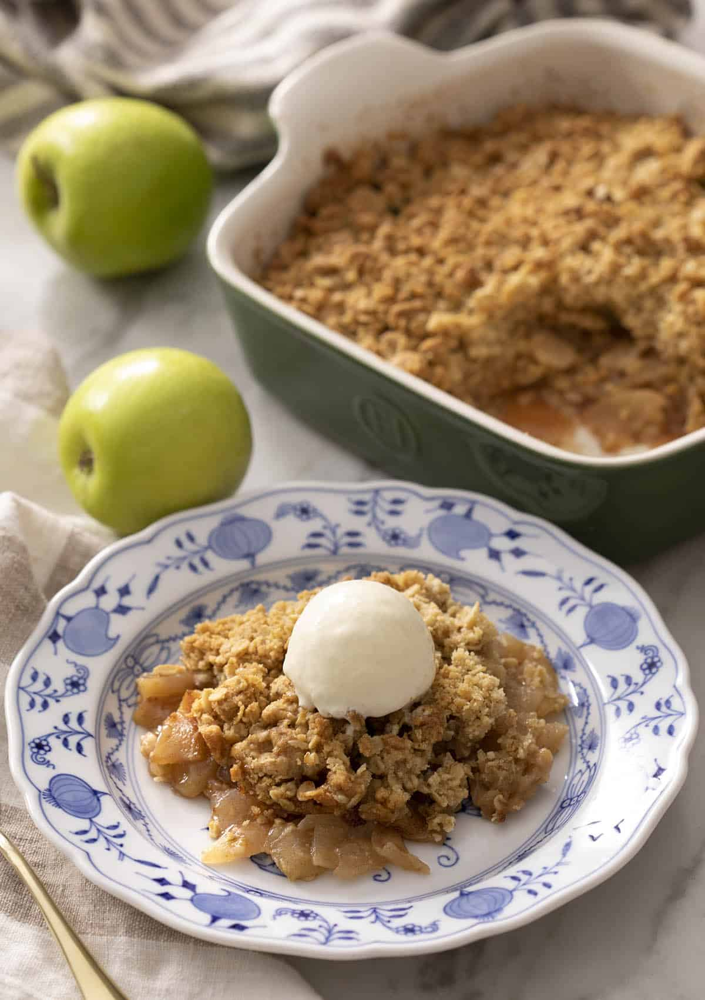

Яблочный крисп

- яблоки — 5–6 шт. / примерно 1,1 кг (Bramley apple)
- замороженная черника или голубика — 100–200 г
- лимонный сок — 2 ст. л.
- мука — 1 ст. л.
- овсяные хлопья — 140 г
- мука — 90 г
- коричневый сахар — 70 г + 1 ст. л.
- соль, мускатный орех, корица
- холодное сливочное масло — 100 г
- кастард или ванильное мороженое — для подачи
Разогреть духовку до 185°C. Смазать маслом форму 20 × 20 см.
5–6 яблок (Bramley apple) очистить, удалить сердцевину и нарезать одинаковыми кусочками. Добавить 100–200 г замороженной черники или голубики и перемешать с 2 ст. л. лимонного сока, 1 ст. л. коричневого сахара, 1 ст. л. муки, ½ ч. л. корицы и ¼ ч. л. мускатного ореха. Выложить в форму.
Смешать 140 г овсяных хлопьев, 90 г муки, 70 г коричневого сахара, 1 ч. л. корицы и ½ ч. л. соли. Добавить 100 г холодного сливочного масла кубиками и растереть руками до крупной крошки. Распределить по яблокам.
Выпекать 45–60 минут, пока верх не подрумянится, а яблочный сок не начнет пузыриться. Немного остудить и подавать теплым с ванильным мороженым или кастардом.